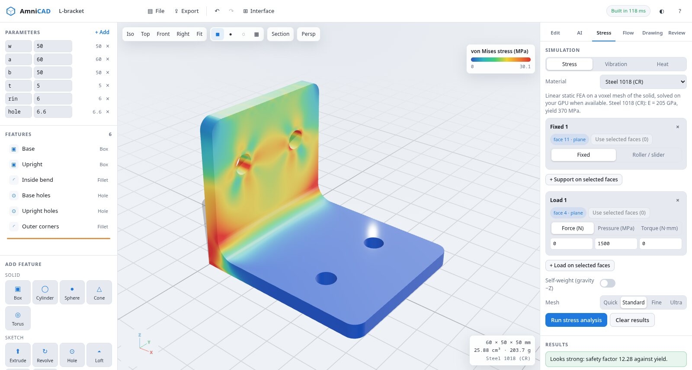

FREE PARAMETRIC CAD IN YOUR BROWSER • STEP EXPORT • GPU STRESS & FLOW • 2D DRAWINGS • BRING YOUR OWN AI
Design a real part, test it, draw it and send it to a machine shop or a printer, without installing anything.

Real B-rep solids from the OpenCascade kernel: extrude, revolve, sweep, loft, holes in standard US (#4 to 1/2 in, 82° countersinks) and ISO metric sizes, UNC and metric threads, fillets, chamfers, shells, patterns, mirrors, threads and coil springs. Every number can be a formula of your parameters.
An organic workspace for characters, grips and creatures. Smooth-blended shapes, sculpt brushes (inflate, dent, crease, smooth, flatten, grab), bones and keyframes, exported as animated glTF. The whole scene is a short text file, so an AI can build or change it in a few hundred tokens. Open Form.
Price the part as you design it. Amni-CAD spots flat sheet, bent sheet or solid parts and quotes laser, waterjet, plasma, CNC router, 3-axis milling and 3D printing with nesting, cut-time planning and DFM checks pinned to the spots that need fixing. Export the flat DXF, or G-code for GRBL, LinuxCNC and Fanuc machines from the Genmitsu 3018 up to a Haas.
Click faces to fix and load them, then solve on your own GPU. Von Mises stress in psi (MPa), displacement, safety factor, natural frequencies and steady heat flow, with imperial units first and metric alongside.
A lattice-Boltzmann flow solver on WebGPU gives drag coefficient, surface pressure and streamlines around the part, in air or water.
Front, top, side and isometric views with hidden lines, auto dimensions, hole callouts and a title block. Export PDF, SVG or DXF.
ISO 2768 general tolerances, ISO 286 fits like H7/g6, GD&T frames, and worst-case, RSS and Monte Carlo stack-ups straight from your model.
Describe a part or a change. Use Claude, OpenAI, Gemini or OpenRouter with your key, your Claude or ChatGPT subscription through the local bridge, or a fully on-device model.
Switch between the Workshop and Blueprint layouts: ribbon, feature tree with rollback bar, properties panel, middle-mouse orbit and standard view shortcuts.
STEP and BREP for any CAD or CAM, STL and 3MF for printing, OBJ, glTF and PLY for rendering. Import STEP too.
Websites can’t sign in to a Claude Pro/Max or ChatGPT Plus plan. Those plans only work inside their own apps. So Amni-CAD comes to your assistant instead.
The local bridge is one small file you run on your own computer. Add it to Claude Code, Claude Desktop, Codex, Gemini CLI or Cursor, pair it once with a six-digit code, and then ask in plain words: “make the bracket 20% lighter and show me the stress.” You watch the part change in your browser while your assistant reads the results and screenshots.
Prefer an API key? Paste one for Anthropic, OpenAI or Google, or sign in once with OpenRouter. The key and your prompts go straight from your browser to that provider.
Want nothing to leave the machine? Pick the on-device model (Amni-LLM on WebGPU), or point it at Ollama or LM Studio.
Start from a template, add features from the ribbon or the palette, or type what you want. Parameters like w = 3.5 (inches by default, or millimeters) drive every size.
Pick the faces that are bolted down and the faces that are pushed. Run stress, modes, heat or flow and read the safety factor, frequencies or drag.
Generate the drawing, set the general tolerance class and fits, add GD&T, and check the stack-up before anything gets made.
STEP for the machine shop, 3MF or STL for the printer, PDF or DXF drawings, and a share link that carries the whole design.
Amni-CAD is free to use, with no account and no trial clock. Pro adds your own vault (PDM) that checks in every part with its STEP, PDF drawing and native file, plus your own drawing standards and a headless API. Enterprise adds a hosted team vault with approvals, clearances and watch-folder automation.
$0 forever
$15 per month
or $150 per year (two months free), for one person. Everything in Free, plus:
$99 per month
or $990 per year (two months free), for up to 10 people on one subscription.
amnicad vault watch checks in every new or changed STEP, Amni-CAD, PDF, STL and DXF file from a folder or build serverPro covers one person and Enterprise covers up to 10, which is also the number of active members a hosted team vault allows. Your license key records the plan and Amni-CAD shows it under Pro. The key is checked on your device with a digital signature, and Amni-CAD never reports who is using it.
Yes. Open Pro in Amni-CAD and choose Manage billing to cancel in Stripe’s billing portal. Your key keeps working until the end of the period you paid for. After that the Pro tools and the headless API lock and everything in Free keeps working.
Yes. A license key is verified on the device, so pasting it in needs no connection. Subscription keys renew by sending only the key to our license server during the last 10 days of each period; a key issued without a subscription never needs to renew. For a machine that is never online, contact us about a fixed-term or perpetual key, and see privacy and export control for the offline single-file copy.
The Pro vault lives on your own computer, in the browser’s storage, and is for one person. Back it up to a file from the Vault tab. The Enterprise team vault is hosted by us so your whole team shares one set of part numbers, revisions and BOMs, with check-out locks so two people never edit the same part, and approvals before a part is released. You can move a personal vault into a team vault in one step. When a subscription ends, the team vault becomes read-only and stays readable so your team can download everything.
Any program that reads and writes STEP, which covers SOLIDWORKS, Inventor, Fusion, Creo, NX, CATIA, Solid Edge, Onshape and FreeCAD. Assemblies come in with every part named and placed, and Pack and Go sends them back out the same way. Drawings export as PDF, SVG and DXF, and meshes as STL, 3MF, OBJ, glTF and PLY. IGES and Parasolid are not supported; save as STEP from the other program instead.
Yes. Contact us with your seat count.
The Amni-CAD engine as a command and a local HTTP API on your own computer, for scripts, build servers and other programs. Your Pro or Enterprise key unlocks it; designs are never uploaded. Read the API guide.
No. Free use needs no account, and there is no telemetry or activity logging. Designs are computed in your browser and are not uploaded. Read exactly what the optional cloud features send.
A worked laser and machining quote with every number shown, DFM flags, a flat DXF to download, and how to enter your own shop rates.
The solvers run against hand calculations and published benchmarks, with expected value, measured value, error and tolerance for every case.
What stays on your hardware, what each optional cloud feature sends and to whom, and how the encrypted vault works.
Everything above stays free. Pro and Enterprise add the tools teams need to run engineering data and drawings the way their company does.
Part data management built into the editor. Every check-in gets a part number, a revision, a category and a STEP, PDF drawing and native file, automatically on save if you like. Find anything with search, filters and sorting, and use 2,478 standard fasteners, springs, wire and stock.
A vault we host for up to 10 people, with 100 GB. Check-out locks, release approvals, change orders, clearance levels and need-to-know compartments, all enforced by encryption. We only ever store ciphertext.
Point amnicad vault watch at a folder and every new or changed STEP, Amni-CAD, PDF, STL or DXF file is checked in, with changed files becoming the next revision. See the commands.
Style a format from any drawing PDF you already use, with title-block fields found for you. Edit formats and symbols visually, and share them through the vault.
Classification banners and distribution statements on every sheet, filled in from the part’s clearance in the vault.
$15 per month · one person
$150 per year · two months free
$99 per month · up to 10 people
$990 per year · up to 10 people
Put your shop on the customer quote widget: logo, accent colour, tagline, footer and quote terms, with the “Powered by Amni-CAD” badge hidden. +$10 per month with Pro or Enterprise monthly.
The key works on any site unless a domain is set; a domain also covers its subdomains.
Secure checkout by Stripe; cancel anytime. Every plan includes the headless API. Your license key opens in Amni-CAD right after payment and is checked on your own device. Subscription keys renew by sending only the key to our license server near the end of each period. Your designs never leave your computer unencrypted; the hosted team vault stores only ciphertext. Need an invoice or a purchase order? Contact us.
Amni-CAD runs entirely in your browser. Geometry, simulations and drawings are computed on your device, and your designs are saved only in your browser or in files you download. Amni-Scient never receives your models, your prompts or your API keys. Share links carry the design inside the link itself.
Works best in Chrome or Edge on a computer with a mouse. No install, no sign-up.
Last updated